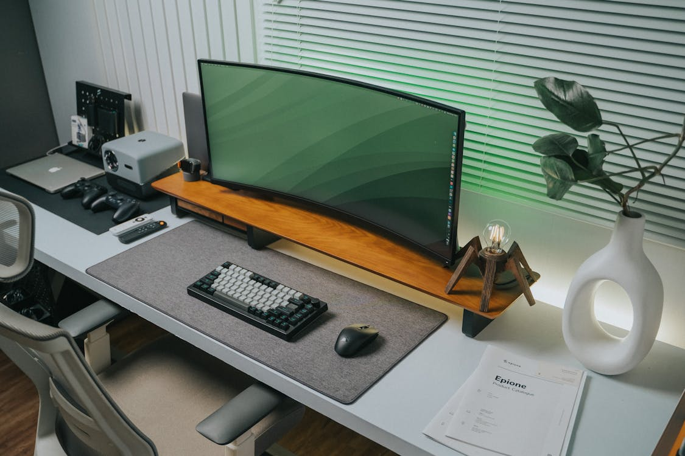
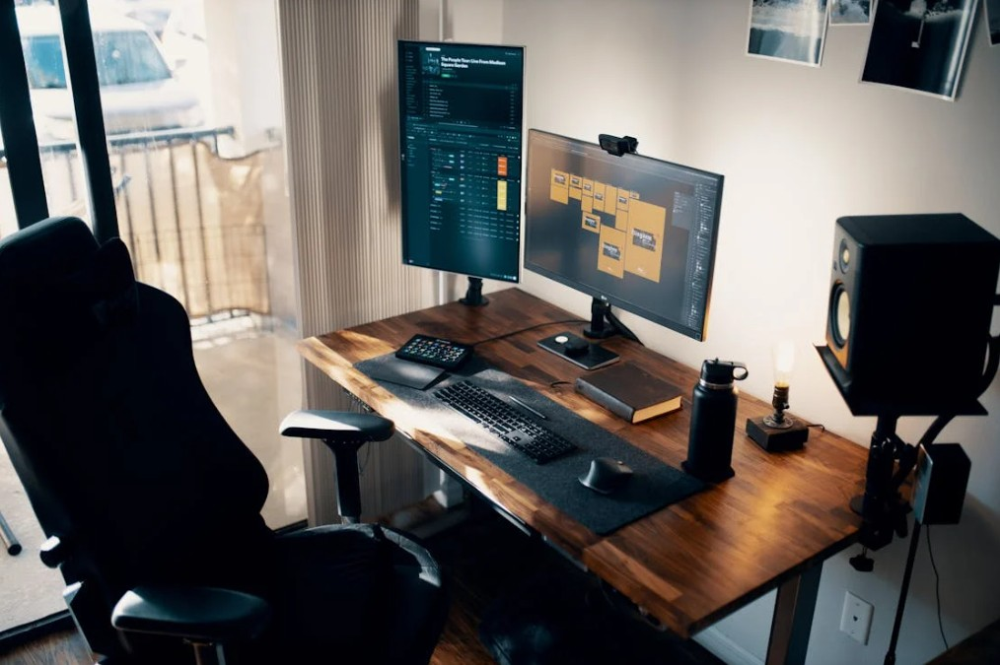
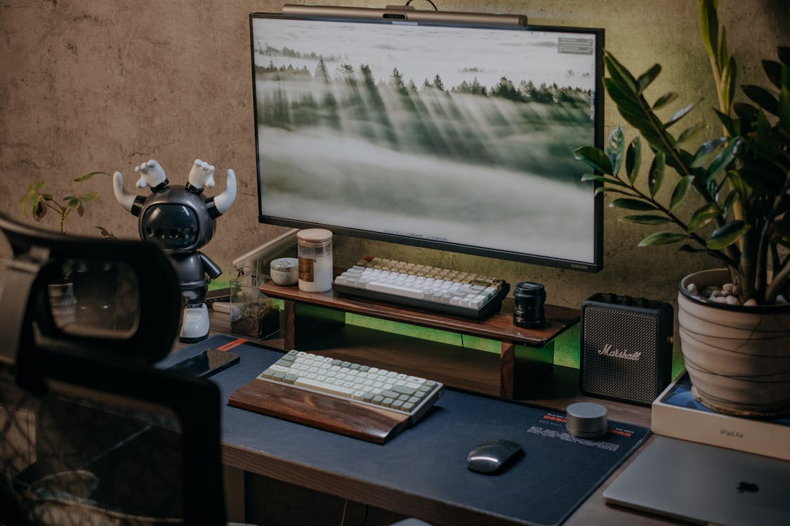
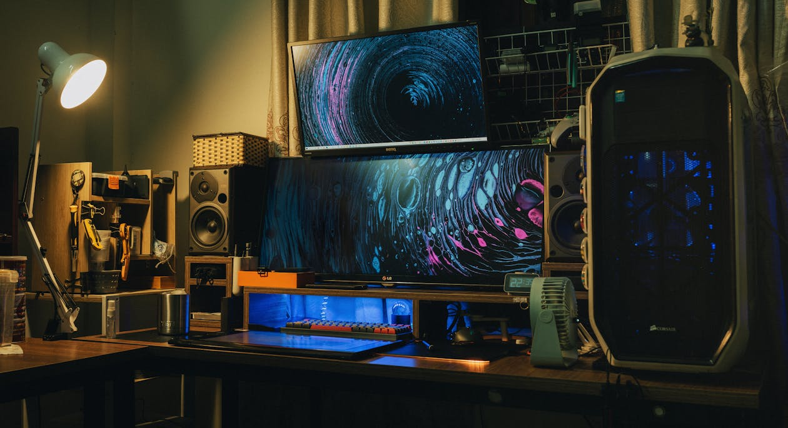

เครื่องสำรองไฟ UPS กันไฟตก ไฟดับ
01 ก.พ. 2568 อยากให้เครื่องใช้ไฟฟ้าของคุณอยู่กับคุณไปนานๆ หรือไม่? เครื่องสำรองไฟ UPS คือคำตอบ! อุปกรณ์ตัวช่วยที่ช่วยยืดอายุการใช้งานของอุปกรณ์อิเล็กทรอนิกส์ของคุณ โดยเฉพาะอย่างยิ่งคอมพิวเตอร์และอุปกรณ์ต่อพ่วงต่างๆ ที่มีความละเอียดอ่อนต่อการเปลี่ยนแปลงของกระแสไฟฟ้า
เครื่องสำรองไฟคืออะไร
เครื่องสำรองไฟ (UPS - Uninterruptible Power Supply) คืออุปกรณ์ที่ออกแบบมาเพื่อให้พลังงานไฟฟ้าในกรณีที่เกิดปัญหากับแหล่งจ่ายไฟหลัก เช่น ไฟดับ หรือไฟตก ด้วยเทคโนโลยีที่ทันสมัย UPS ช่วยปกป้องอุปกรณ์ไฟฟ้าจากความเสียหายที่อาจเกิดขึ้นจากการขาดหรือการเปลี่ยนแปลงกระแสไฟฟ้า โดยให้พลังงานสำรองในช่วงเวลาที่ไฟฟ้าหายไป ทำให้คุณสามารถบันทึกข้อมูลหรือปิดเครื่องอย่างปลอดภัยได้ การทำงานของเครื่อง UPS จะใช้แบตเตอรี่ในการเก็บพลังงานไฟฟ้า เมื่อระบบจ่ายไฟหลักมีข้อผิดพลาด เครื่อง UPS จะทำหน้าที่เปลี่ยนไปใช้พลังงานจากแบตเตอรี่แทนทันที เพื่อให้การใช้งานของอุปกรณ์ไฟฟ้ายังคงดำเนินไปอย่างต่อเนื่อง ไม่สะดุด การเลือกระบบ UPS ต้องคำนึงถึงกำลังไฟที่อุปกรณ์ต่างๆ ต้องการ รวมถึงระยะเวลาที่เราต้องการให้ระบบทำงานเมื่อไฟฟ้าหายไป ซึ่งสิ่งเหล่านี้จะมีผลต่อราคาของเครื่อง UPS ที่คุณเลือกใช้
ทำไมต้องใช้เครื่องสำรองไฟ
การมีเครื่องสำรองไฟ UPS เป็นสิ่งจำเป็นในยุคที่เทคโนโลยีก้าวหน้าอย่างรวดเร็ว โดยเฉพาะหากคุณต้องการเซฟข้อมูลสำคัญและป้องกันอุปกรณ์ไฟฟ้าจากความเสียหาย เครื่อง UPS มีข้อดีหลายประการที่ไม่ควรมองข้าม
- ปกป้องข้อมูล: ในกรณีที่ไฟฟ้าดับหรือมีการตัดสินใจที่ไม่แน่นอน ความเสี่ยงในการสูญเสียข้อมูลสำคัญในคอมพิวเตอร์นั้นสูงมาก เครื่อง UPS ช่วยให้คุณสามารถบันทึกงานหรือปิดเครื่องอย่างถูกวิธี ลดโอกาสการสูญหายของข้อมูล
- ความต่อเนื่องในการทำงาน: สำหรับธุรกิจที่ต้องการให้ระบบทำงานตลอดเวลา เช่น เซิร์ฟเวอร์ไฟฟ้า การมีเครื่อง UPS จะทำให้การทำงานไม่หยุดชะงัก แม้ในสถานการณ์ไฟฟ้าขัดข้อง
- ป้องกันความเสียหายต่ออุปกรณ์: เมื่อมีไฟกระชากหรือไฟตก อุปกรณ์ไฟฟ้าอาจได้รับความเสียหาย เครื่อง UPS ช่วยกรองและควบคุมกระแสไฟฟ้าเพื่อปกป้องอุปกรณ์จากผลกระทบเหล่านี้
- เพิ่มความมั่นใจ: ในสถานการณ์ที่คุณต้องพึ่งพาอุปกรณ์ไฟฟ้าเป็นหลัก เช่น การทำงานจากที่บ้าน การมีเครื่องสำรองไฟจะช่วยให้คุณรู้สึกมั่นใจในความปลอดภัยของข้อมูลและอุปกรณ์
- เหมาะสำหรับการใช้งานในหลายสถานการณ์: เครื่อง UPS สามารถใช้งานได้ในหลากหลายสถานการณ์ ทั้งที่บ้าน สำนักงาน หรือแม้แต่ในศูนย์ข้อมูล ช่วยให้การทำงานเร็วและมีประสิทธิภาพมากขึ้น
เครื่องสำรองไฟมีกำลังไฟเท่าไหร่บ้าง
การเลือกซื้อเครื่องสำรองไฟ (UPS) ให้เหมาะสมกับการใช้งานนั้น ต้องพิจารณากำลังไฟฟ้าที่เครื่องสามารถรองรับได้ ซึ่งกำลังไฟใน UPS ถูกระบุในรูปของ VA (Volt-Amperes) หรือ W (Watts) โดยทั่วไปแล้ว เครื่องสำรองไฟจะมีหลายขนาดกำลังไฟ เพื่อรองรับความต้องการที่แตกต่างกันของผู้ใช้งาน ทั้งในบ้านและในธุรกิจ
ประเภทของ UPS ตามกำลังไฟ
- UPS ขนาดเล็ก (600 - 1,000 VA): เหมาะสำหรับการใช้งานในบ้าน เช่น คอมพิวเตอร์ส่วนบุคคล, อุปกรณ์การแสดงผล และอุปกรณ์เล็ก ๆ อื่น ๆ
- UPS ขนาดกลาง (1,000 - 3,000 VA): แนะนำเครื่องสํารองไฟ ups 1000 va สำหรับสำนักงานขนาดเล็ก หรือธุรกิจที่มีการใช้งานอุปกรณ์มากมาย เช่น เซิร์ฟเวอร์ เครือข่าย รวมถึงอุปกรณ์การจัดเก็บข้อมูลขนาดเล็ก
- UPS ขนาดใหญ่ (มากกว่า 3,000 VA): ใช้สำหรับศูนย์ข้อมูลหรือธุรกิจขนาดใหญ่ ที่ต้องการพลังงานไฟฟ้าสำรองอย่างต่อเนื่องและมีระบบที่ซับซ้อน เช่น เซิร์ฟเวอร์หลายเครื่อง อุปกรณ์ในการสื่อสารและเครือข่ายที่มีความสำคัญมาก
สรุปการเลือกซื้อเครื่องสำรองไฟ
การเลือกซื้อเครื่องสำรองไฟ UPS ที่เหมาะสมกับความต้องการใช้งานไม่เพียงแต่ช่วยปกป้องอุปกรณ์ไฟฟ้าของคุณ แต่ยังช่วยให้คุณทำงานได้อย่างมั่นใจในสถานการณ์ไฟฟ้าขัดข้อง รุ่นที่ได้รีวิวในที่นี้ล้วนมีคุณสมบัติที่โดดเด่นและราคาที่คุ้มค่า ทำให้คุณสามารถเลือกซื้อได้ตามงบประมาณและความต้องการของคุณได้อย่างเหมาะสม
คำถามที่พบบ่อยเกี่ยวกับเครื่องสํารองไฟ UPS
UPS 1000VA ใช้ได้กี่ชั่วโมง?
ระยะเวลาในการใช้งานของ UPS 1000VA ขึ้นอยู่กับกำลังไฟของอุปกรณ์ที่เชื่อมต่อ โดยเฉลี่ยแล้ว หากใช้กับอุปกรณ์ที่มีกำลังไฟรวมประมาณ 300-400 วัตต์ UPS รุ่นนี้อาจสามารถใช้งานได้ประมาณ 15-30 นาที ขึ้นอยู่กับประสิทธิภาพของแบตเตอรี่และภาระการใช้งาน
ทีวี 65 นิ้ว ใช้ UPS กี่วัตต์?
ทีวีขนาด 65 นิ้วมักจะมีการใช้พลังงานอยู่ที่ประมาณ 100-300 วัตต์ โดยขึ้นอยู่กับรุ่นและเทคโนโลยีที่ใช้ สำหรับการเลือก UPS ควรมีกำลังไฟมากกว่าที่ทีวีใช้ เพื่อรองรับอุปกรณ์อื่น ๆ ที่อาจจะเชื่อมต่อด้วย เช่น เครื่องเสียงหรือบลูเรย์
UPS ป้องกันไฟกระชากได้ไหม?
เครื่องสำรองไฟ UPS มักจะมีระบบป้องกันไฟกระชากในตัว ซึ่งจะช่วยป้องกันอุปกรณ์ที่เชื่อมต่อไม่ให้เสียหายจากไฟกระชากหรือความตึงเครียดของไฟฟ้า ทำให้เป็นการป้องกันที่มีประสิทธิภาพในกรณีที่เกิดปัญหาดังกล่าว
เครื่อง UPS ใช้งานได้กี่ปี?
อายุการใช้งานของเครื่อง UPS ขึ้นอยู่กับคุณภาพของแบตเตอรี่และการบำรุงรักษาที่เหมาะสม โดยเฉลี่ยแล้ว แบตเตอรี่ UPS สามารถใช้งานได้ประมาณ 3-5 ปี อย่างไรก็ตาม หากมีการใช้ที่หนักหรือต้องใช้งานอย่างต่อเนื่อง อายุการใช้งานอาจลดลง